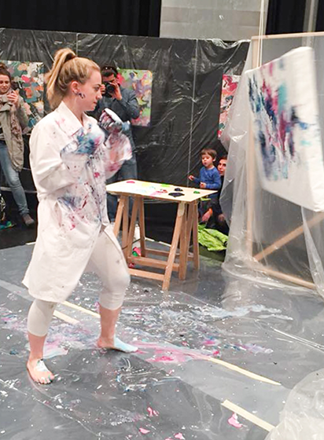

JKON 2025 «Dichtung»
as a guest in the premises of the Kunstverein Olten
Artists:
Mariam Abashidze, Loris Delfino Fidel Bessler, Nico Gehbauer, Ramon Iten, Timm Kornelius, Lorena Lira, Sarah Lokalema, Nolan Lucidi, Ricardo Meli, Laura Nan, Laura Veenemans, Lea Vetter, Cosimo Wunderlin
from 30.08.2025 to 28.09.2025
Curation:
Florian Amoser, Lorenz Fischer, Nermina Šerifović
JKON 2023 «Exploit me»
as a guest at Kunstmuseum Olten
Artists:
Aathmigan Jegatheeswaran, Mina Achermann, Roshan Adhihetty, Boyband CHIC, Nicolle Bussien, Adrian Fernandez Garcia, Victoria Holdt, Andreas Jäggi, Genevieve Leong, Mendog & Stevil, Cheyenne Oswald, Jan Pulfer, Denis Roueche, Catherin Schöberl, Stirnimann & Stojanovic, Emile Van Helleputte & Celine Aernoudt, Mahtola Wittmer, Selina Zurrer, Daniel Zusli
Awards:
Mendog & Stevil (5'000.- CHF cash prize presented by the Hans and Beatrice Maurer-Billeter Foundation)
Roshan Adhihetty (Sommerfenster at Kunsthaus Zofingen LOOK@JKON 2024)
Mahtola Wittmer (Exhibition in the Dienstraum of Kunstmuseum Olten 2024)
Curation:
Florian Amoser, Lorenz Fischer, Nermina Šerifović
JKON 2022
at the Schützi Olten cultural centre
Artists:
Anita Moser, Benjamin Schwander, Catherin Schöberl, Emile Van Helleputte, Isabelle Benvenuti, Lars Tuchel, Manuela Cossalter, Marc M. Lauber, Noah Ismael Wyss, Teddy Pratt, Tirza Matter
Awards:
Isabelle Benvenuti (5'000.- CHF cash prize presented by the Hans and Beatrice Maurer-Billeter Foundation)
Catherin Schöberl (Sommerfenster at Kunsthaus Zofingen LOOK@JKON 2023)
Manuela Cossalter (Exhibition in the Dienstraum of Kunstmuseum Olten 2023)
Curation:
Florian Amoser, Lorenz Fischer, Nermina Šerifović
JKON 2021
at the Schützi Olten cultural centre
Artists:
Aathmigan Jegatheeswaran, Alexandra Feusi, Andrea Francesco Todisco, Emanuel Heim, Genevieve Leong, Irene Gazzillo, Line Chevalley, Lorenz Fischer, Mina Achermann, Nathalie Stirnimann, Stefan Stojanovic, Stéphanie Kiser, Val Kobi, Cheyenne Oswald, Victoria Holdt, Zhaoyue Fan
Awards:
Nathalie Stirnimann, Stefan Stojanovic (5'000.- CHF cash prize presented by the Hans and Beatrice Maurer-Billeter Foundation)
Nathalie Stirnimann, Stefan Stojanovic (Sommerfenster at Kunsthaus Zofingen LOOK@JKON 2022)
Lorenz Fischer (Exhibition in the Dienstraum of Kunstmuseum Olten 2022)
Curation:
Florian Amoser, Janine Strasser, Nermina Šerifović
JKON 2020
at the Schützi Olten cultural centre
Artists:
Alexeï Monney, Delia Ferraro, Isabelle Weber, Joëlle Bischof, Robin Lütolf, June Schädelin, Noa Andrea Steiner, Lea Elina Hofer, Babette Walder, Linus Stiefel, Mindaugas Matulis, Sacha Rappo, Ste Haudenschild, Stella Meris, Yaeka Tabara
Awards:
Stella Meris (5'000.- CHF cash prize presented by the Hans and Beatrice Maurer-Billeter Foundation)
Delia Ferraro (Sommerfenster at Kunsthaus Zofingen LOOK@JKON 2021)
Isabelle Weber (Exhibition in the Dienstraum of Kunstmuseum Olten 2021)
Curation:
Florian Amoser, Janine Strasser, Nermina Šerifović

JKON 2019
at the Schützi Olten cultural centre
Artists:
Andreas Jäggi, Anina Müller, Anna Jaun, Christina Huber, Denis Roueche, Eliane Hürlimann, Franca Manz, Jannai Balikavlayan, Ambrosius Huber, Jolanda Epprecht, Luca Harlacher, Mirko Kircher, Moritz Tobler, Nicole Küttel, Nicolle Bussien, Julian Zehnder, Ronja Römmelt, Nefeli Chrysa Avgeris, Stefanie Koemeda, Sven Friedli, Tereza Glazova, Tobias Furter
Awards:
Anina Müller (5'000.- CHF cash prize presented by the Hans and Beatrice Maurer-Billeter Foundation)
Luca Harlacher (Sommertenster im Kunsthaus Zofingen LOOK@JKON 2020)
Denis Roueche (Exhibition in the Dienstraum of Kunstmuseum Olten 2020)
Curation:
Florian Amoser, Janine Strasser, Nermina Šerifović

JKON 2018
at the Schützi Olten cultural centre
Artists:
Alizé Rose-May Monod, Anna Marcus, Aramis Navarro, Corina Schaltegger, Fernando Obieta, Gregor Vogel, Helen Eggenschwiler, Kaspar Flück, Kornelia Hui, Lea Meier, Livio Beyeler, Manutcher Milani, Marlijn Karsten, Michael Reinhold, Mirkan Deniz, Nina Carla Hunziker, Sebastian Haas, Yasmin Mattich
Awards:
Aramis Navarro, Yasmin Mattich, Alizé Rose-May Monod
Curation:
Tanja Breu, Antonella Barone
JKON 2017
at the Schützi Olten cultural centre
Artists:
Adrian Fernandez Garcia, Anouk Strahl, Cornelia Fröhlich, Daniel Züsli, Eliane Hürlimann, Flavia Somalvico, Gregor Vogel, Mathola Wittmer, Mattania Bösiger, Michaela Schmid, Nadja Künzli, Nicolas Witschi, Ramona Köchli, Reto Lienhard, Samuel Rauber, Sonja Berta
Awards:
Gregor Vogel, Cornelia Fröhlich
Curation:
Shannon Zwicker, Andrina Keller
JKON 2016
at the Schützi Olten cultural centre
Artists:
Corina Heinrich, Daniel Müller, Fabian Matz, Jan Merlin Pulfer, Julia Nussbaumer, Julia Schicker, Laurie Vannaz, Maeva Rosset, Matthias Amsler, Naomi Figueiredo, Nico Sebastian Meyer, Pearlie Frisch, Ruben Frei, Sara Tordini, Samuel Kunz, Selina Zürrer, Thomas Blank
Awards:
Jan Merlin Pulfer, Fabian Matz, Samuel Kunz
JKON 2015
at the Schützi Olten cultural centre
Artists:
Anna Andris-Schwindt, Aresu Khosy, Carol Baumgartner, Charlotte Friedli, Janine Strasser, Manuel Guldimann, Marea Hildebrand, Nadia Bader, Paloma Egger, Polina Chizhova, Rafael Lippuner, Ronja Römmelt, Roshan Adhihetty, Simon Hofmann, Tyrone Richards, Ursina Leutenegger, Micha Reichenbach
Awards:
Charlotte Friedli, Nadia Bader, Roshan Adhihetty